Ecuador es uno de los mayores exportadores de camarón del mundo. La clasificadora de camarón, la despieladora de pescado y los congeladores de Grandluck están hechos exactamente para ese tipo de planta — y Ecuclima ya conoce a esos clientes.
Ecuclima, empresa ecuatoriana de refrigeración industrial desde 1998, es representante autorizado de Grandluck en Ecuador. Grandluck fabrica túneles de congelación IQF (malla, banda sólida y Super-jet), congeladores espirales, congeladores de placas, lecho fluidizado, túnel de choque, máquinas de hielo en escamas, tubo, placa y bloque, y equipos para procesar camarón y pescado: clasificadora de camarón, despieladora de pescado y línea de camarón cocido.
La cotización la prepara Grandluck desde fábrica. Ecuclima la coordina con usted y, si lo prefiere, le vende el equipo en Ecuador; además lo instala, lo supervisa y da servicio técnico local.
Elija por aplicación
Congeladores espirales
Túneles de congelación
Otros congeladores
Congeladores de placas
Máquinas de hielo
Procesamiento de camarón y pescado
Línea de camarón cocido
Sistemas de refrigeración
Estructura y eyector
Quiénes son
Nantong Grandluck Freezcold Equipment Co., Ltd. se especializa en congelación rápida y soporte de refrigeración para el procesamiento de alimentos. Su equipo de ingenieros mecánicos, de refrigeración, eléctricos y de automatización tiene un promedio de 15 años de experiencia, respaldado por técnicos de producción e instalación y un equipo propio de gestión de pedidos y operación en obra.
Antes de cotizar, van a la planta del cliente: entienden a fondo el proceso de cada alimento y diseñan el equipo de congelación y refrigeración a la medida — cotización, pedido, entrega e instalación en sitio, con servicio posventa completo.
Ofrecen diseños no estándar para necesidades especiales de proceso, con la meta declarada de ser un fabricante de estándar internacional.
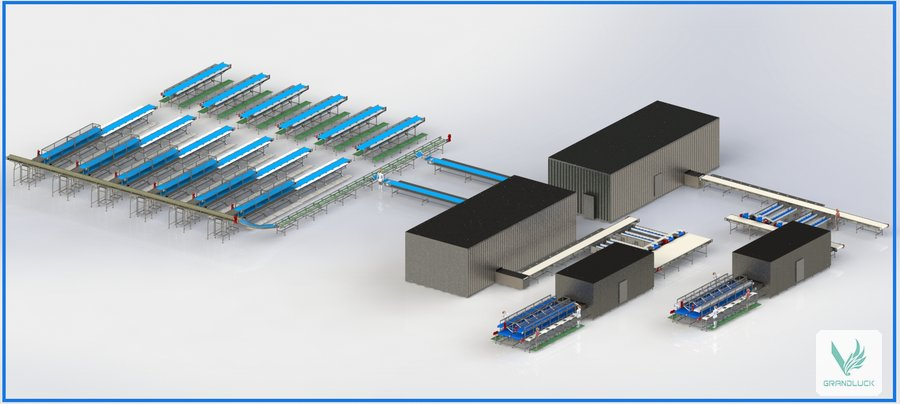
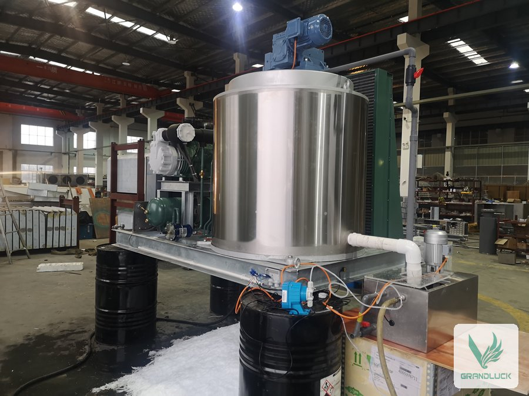
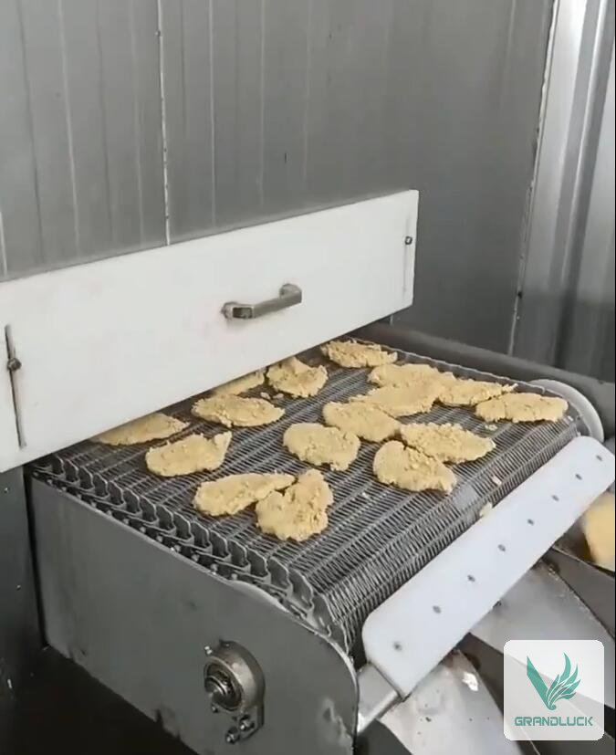
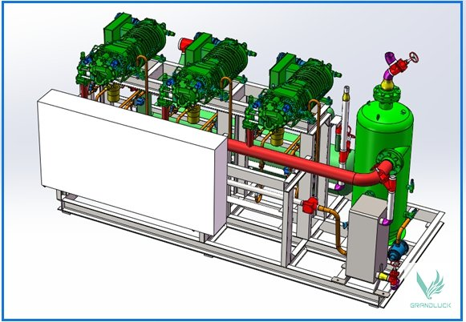
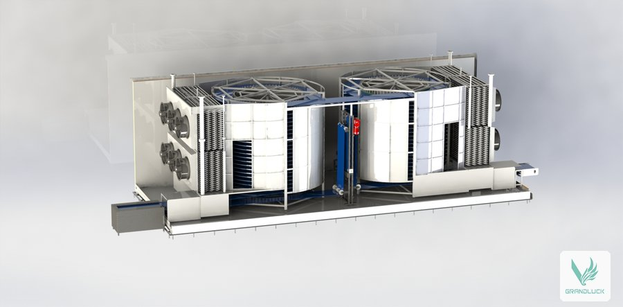
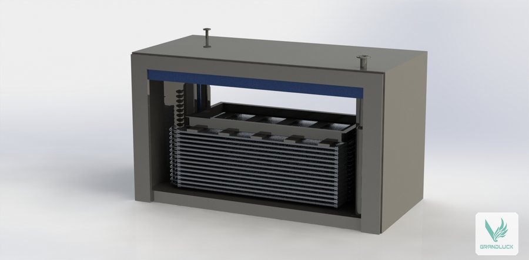
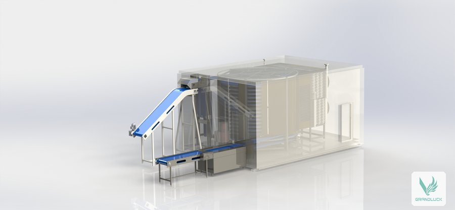
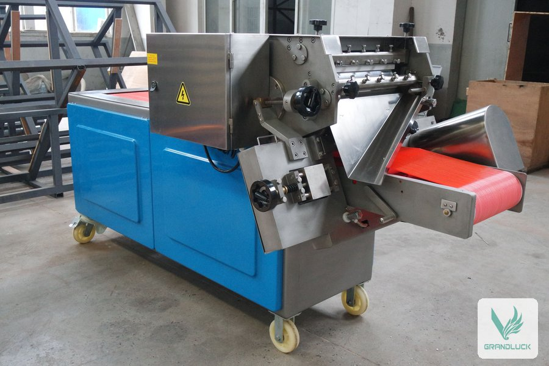
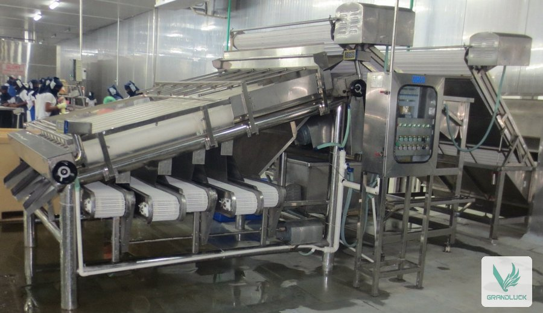
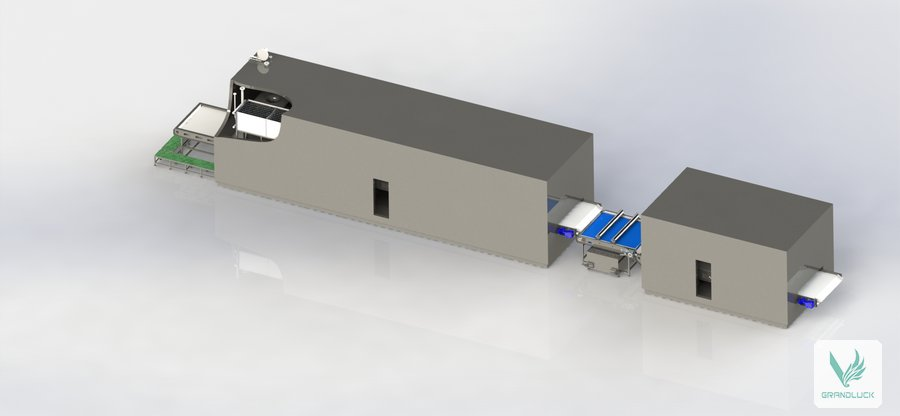
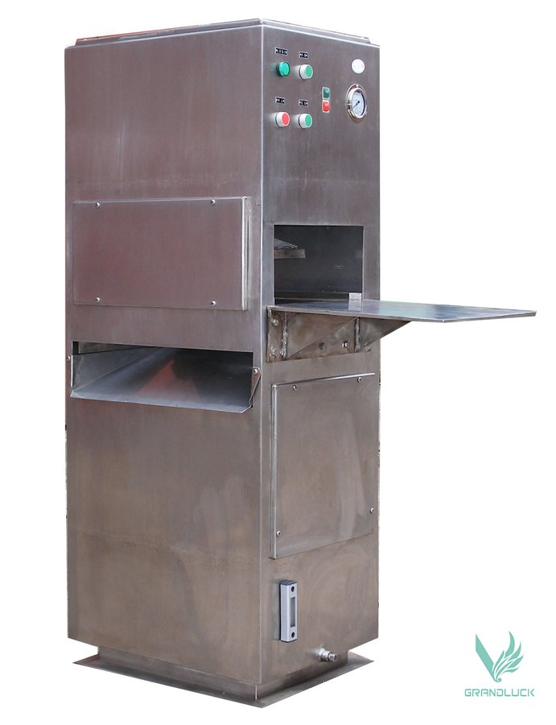
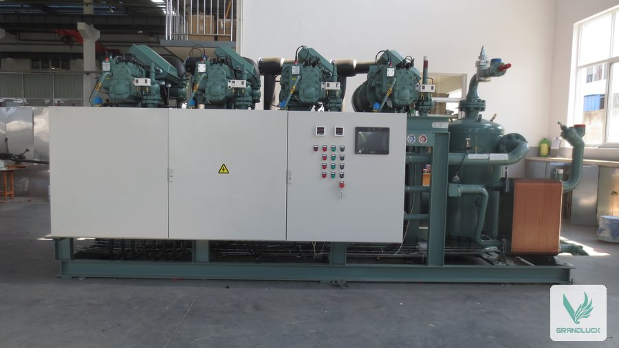
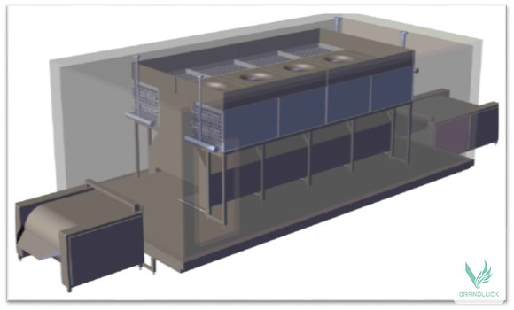
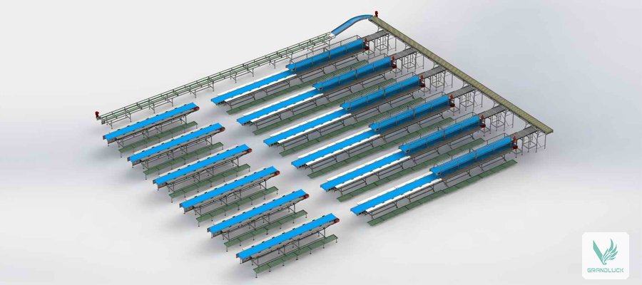
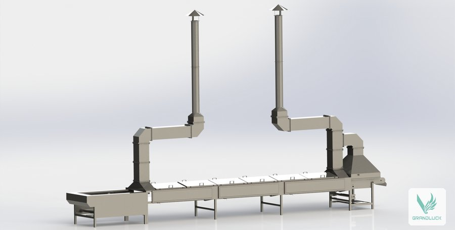
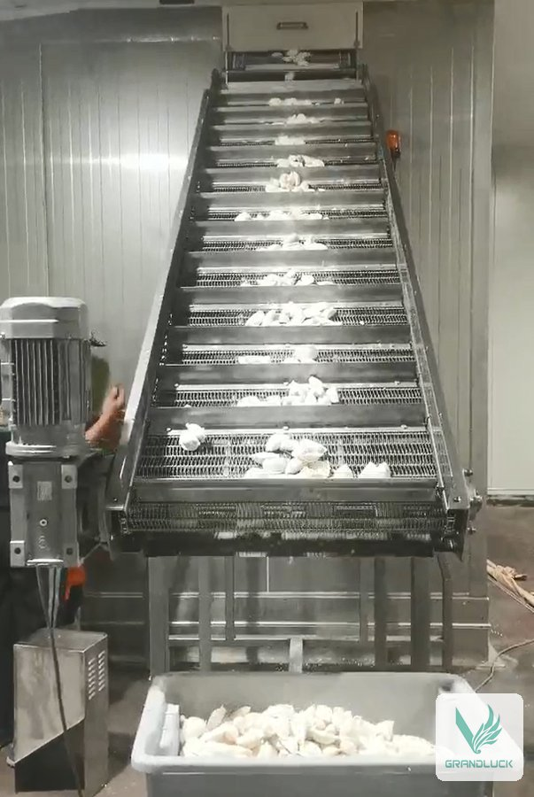
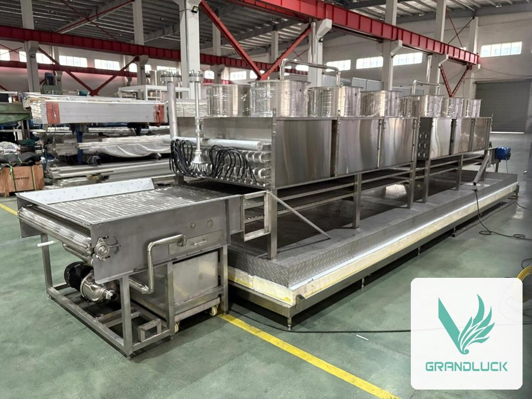
Preguntas frecuentes
¿Quién representa a Grandluck en Ecuador?
Ecuclima, representante autorizado de Grandluck en Ecuador, con oficina en Conocoto, Quito. La cotización la prepara la fábrica; Ecuclima la coordina con usted, instala, supervisa y da servicio técnico local, y también puede venderle el equipo. WhatsApp +593 95 980 5696.
¿Qué equipos Grandluck se pueden pedir?
Congeladores espirales (simple y doble), túneles de congelación (malla, banda sólida y Super-jet), congeladores de placas (vertical, horizontal y tipo estante), lecho fluidizado IQF, túnel de choque, máquinas de hielo (escamas, tubo, placa y bloque), clasificadora de camarón, despieladora de pescado, línea de camarón cocido, sistemas de refrigeración a medida, y bandejas, marcos y eyector.
¿Grandluck sirve para plantas camaroneras?
Sí. La clasificadora de camarón, la despieladora de pescado, los túneles y los congeladores de Grandluck están hechos para ese tipo de planta.
¿Quién es el fabricante?
Nantong Grandluck Freezcold Equipment Co., Ltd. (China), especializada en congelación rápida y soporte de refrigeración para el procesamiento de alimentos.
¿Cómo se cotiza?
Escríbanos por WhatsApp con el producto, el volumen y la ciudad de la planta. Ecuclima coordina la cotización con Grandluck, que diseña el equipo a la medida.
La cotización la prepara Grandluck desde fábrica. Ecuclima la coordina con usted y, si lo prefiere, le vende el equipo en Ecuador; además lo instala, lo supervisa y da servicio técnico local.
¿Prefiere hablar directo con el fabricante? WhatsApp Grandluck · info@grandluck-freezcold.com